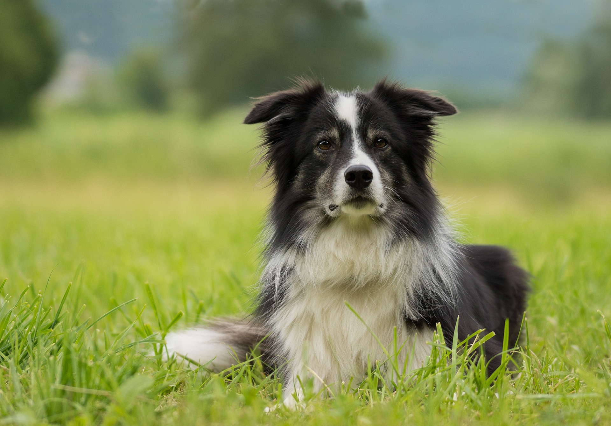
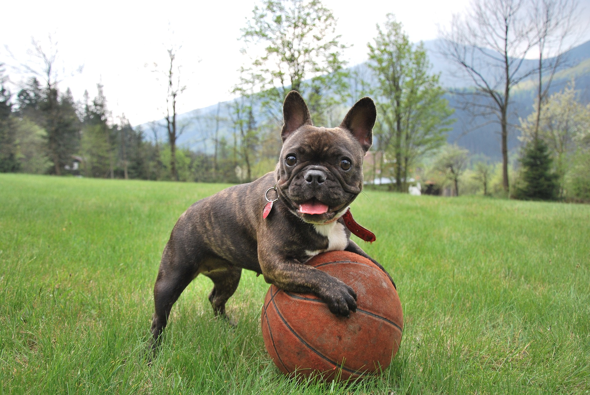
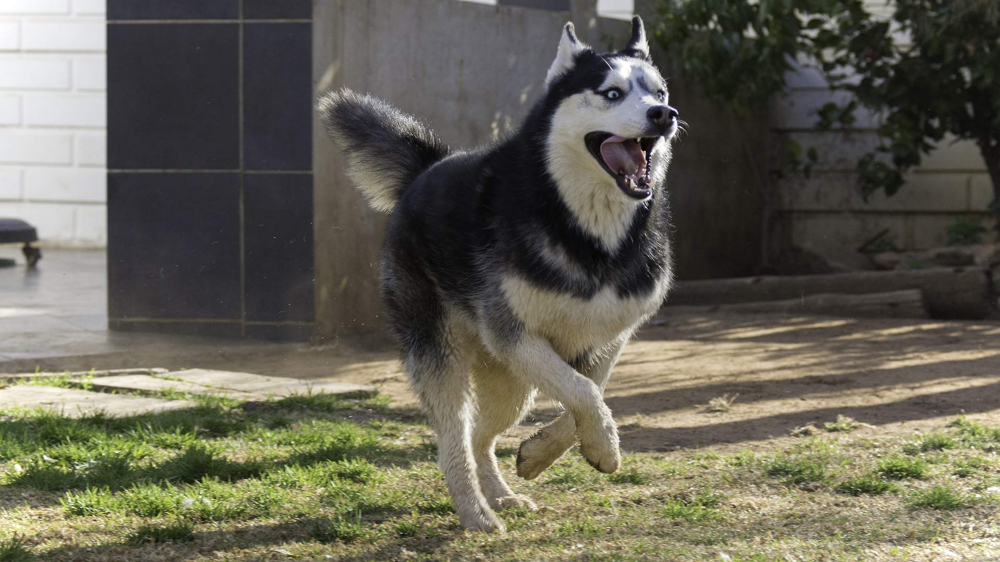
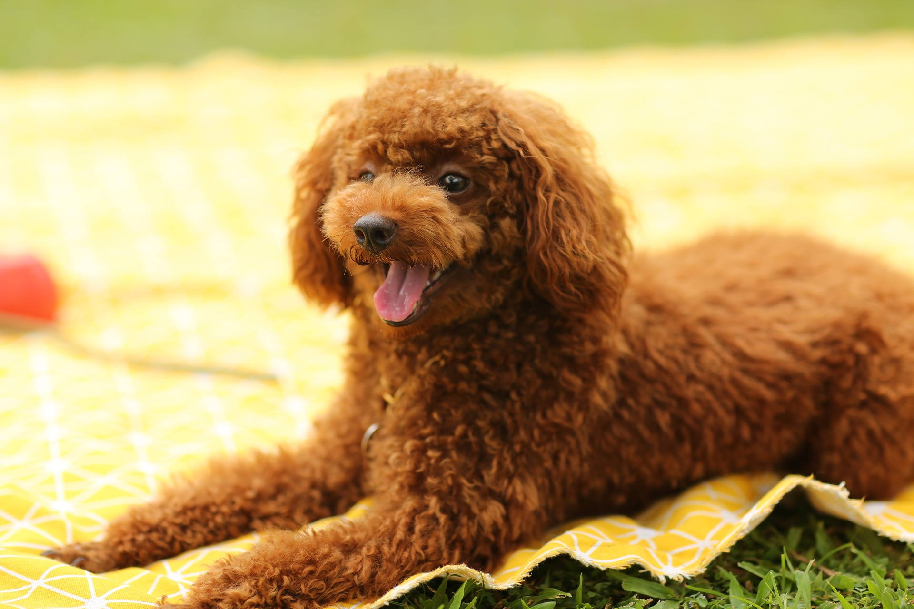
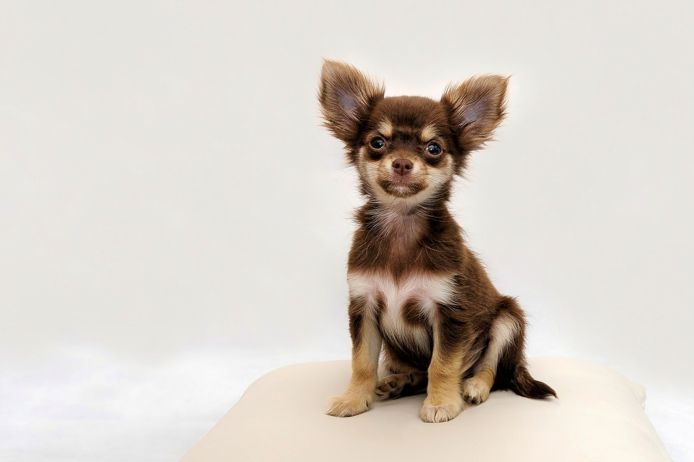

-

Dog Breeds
Golden Retriever
The Golden Retriever is a beloved breed known for its friendly and gentle temperament. Originating from Scotland, these dogs are not only beautiful but also intelligent and loyal companions. With their golden coats and kind eyes, they excel as family pets, therapy dogs, and in various roles in search and rescue operations.
-

Dog Breeds
German Shepherd
German Shepherds are renowned for their versatility and strength. Originally bred as herding dogs, they are now widely used in various roles, including police and military work, search and rescue, and as service animals. Their intelligence, loyalty, and protective instincts make them ideal working partners and devoted family pets.
-

Dog Breeds
Border Collie
Border Collies are highly intelligent and energetic herding dogs. Originating from the border regions between Scotland and England, these agile and athletic dogs excel in activities like agility trials and obedience competitions. Their intense focus, quick learning abilities, and boundless energy require plenty of mental and physical stimulation to thrive.
-

Dog Breeds
French Bulldog
French Bulldogs, with their distinctive bat-like ears and charming personalities, have captured the hearts of many dog lovers. Despite their small size, they possess a sturdy build and a playful demeanor. Affectionate and adaptable, Frenchies make excellent companions for city dwellers and families alike.
-

Dog Breeds
Labrador Retriever
Labrador Retrievers are one of the most popular dog breeds worldwide, known for their friendly and outgoing nature. With their signature otter-like tails and water-resistant coats, Labs excel in various roles, including as assistance dogs for individuals with disabilities, search and rescue, and as beloved family pets.
-

Dog Breeds
Siberian Husky
Siberian Huskies are majestic, wolf-like dogs known for their endurance and striking appearance. Originating from Siberia, these sled dogs are built for cold climates and are famous for their ability to pull heavy loads over long distances. With their independent nature and strong pack instincts, Huskies thrive in active households with plenty of space to roam.
-

Dog Breeds
Dachshund
Dachshunds, also known as wiener dogs or sausage dogs, are characterized by their long bodies and short legs. Despite their small size, they possess a courageous and curious nature. Originally bred for hunting small game, Dachshunds today are cherished companions known for their loyalty and amusing personalities.
-

Dog Breeds
Poodle
Poodles are renowned for their intelligence, elegance, and hypoallergenic coats. Available in three sizes—standard, miniature, and toy—Poodles excel in various activities, including obedience trials, agility competitions, and as therapy dogs. Their graceful appearance and keen intellect make them cherished companions and versatile working dogs.
-

Dog Breeds
Beagle
Beagles are merry and curious scent hounds known for their keen sense of smell and friendly disposition. Originating from England, these compact yet muscular dogs were originally bred for hunting hare. With their affectionate nature and playful demeanor, Beagles make excellent family pets and are well-suited for active households.